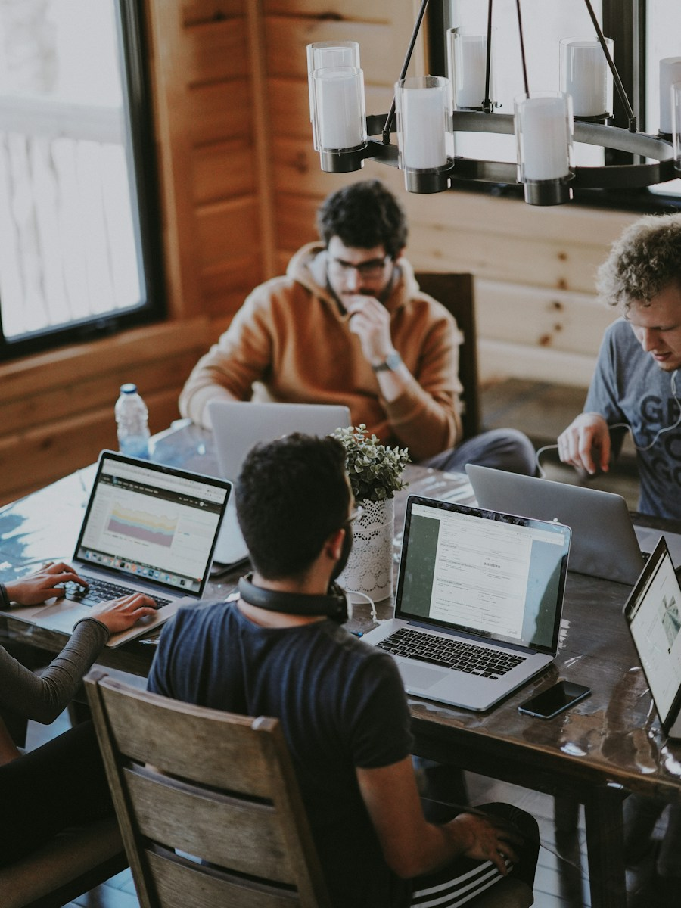
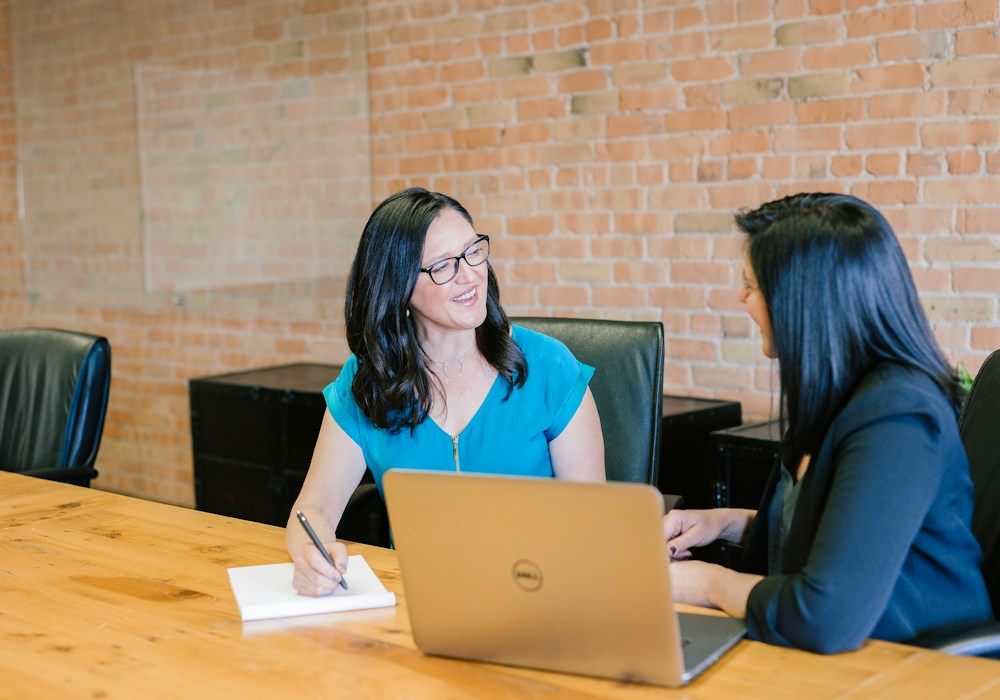
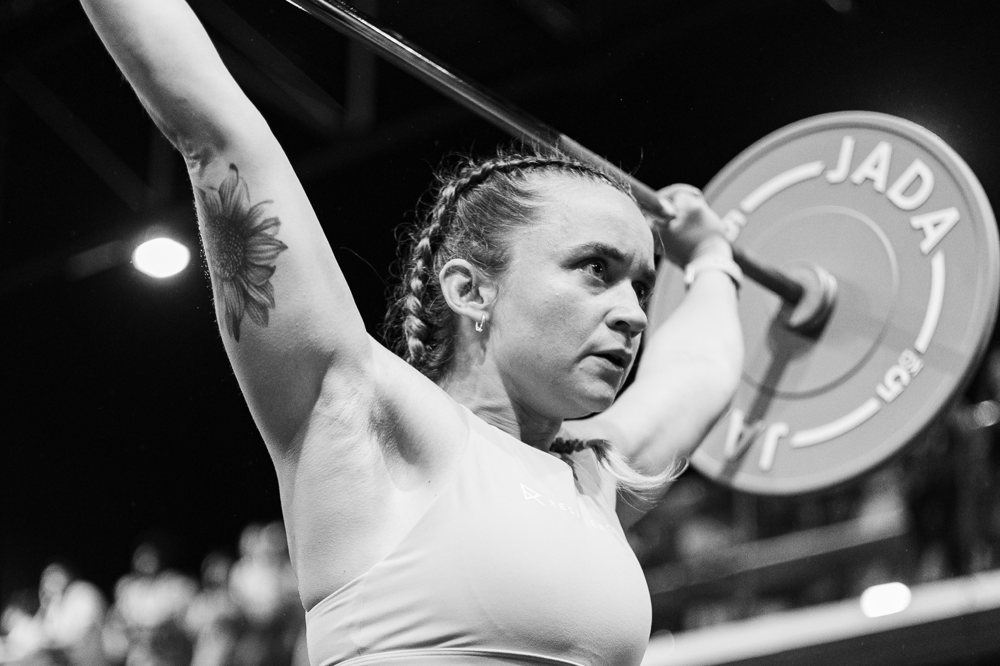
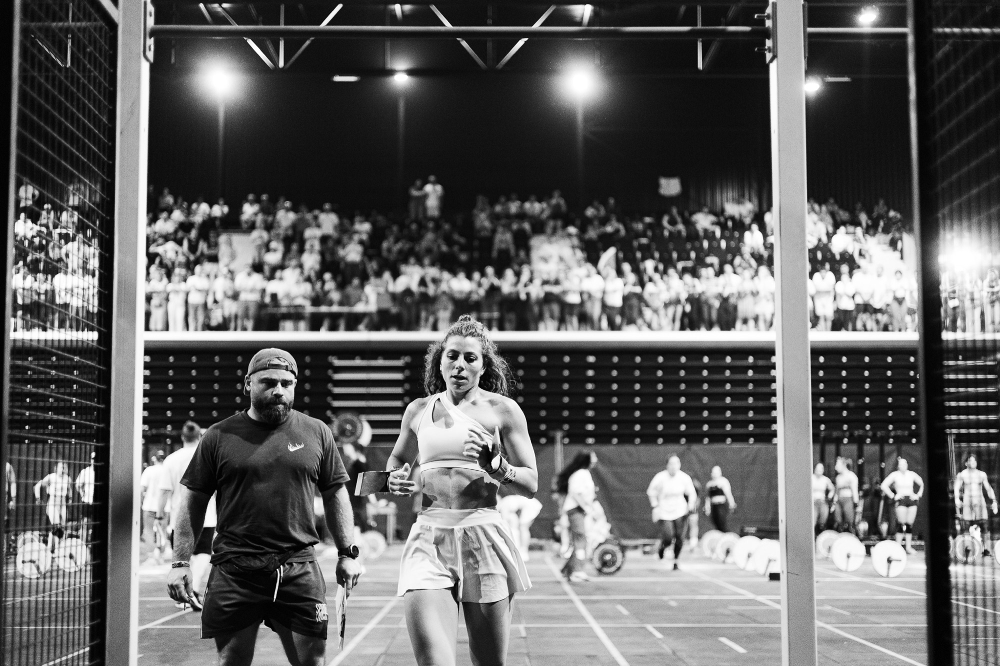

Photographie · Portraits
Des portraits à votre image.
Des séances adaptées aux personnes, aux équipes et aux usages de leurs images.
DécouvrirPrestation 01
Portrait personnel & créatif
Pour celles et ceux qui souhaitent des images personnelles, créatives ou destinées à un projet. Nous préparons la séance selon vos envies, le lieu et l’usage prévu des photographies.
- Tarif
- À partir de 120 €
- Durée indicative
- 1 h 30


Prestation 02
Portrait professionnel
Pour les indépendants, artistes, artisans et équipes qui ont besoin de portraits ou d’images en situation. Les prises de vue peuvent se dérouler dans votre atelier, votre établissement ou votre environnement de travail.
- Tarif
- À partir de 200 €
- Durée indicative
- Environ 2 h


Prestation 03
Portrait collectif & sportif
Pour les couples, les familles, les groupes, les équipes et les sportifs. La séance peut réunir des portraits individuels et collectifs, en studio ou dans le cadre de votre activité.
- Tarif
- À partir de 200 €
- Durée
- Variable selon le nombre de personnes et le projet



Une sélection soignée
Un minimum de photographies retouchées est convenu selon la séance. Il n’y a pas de plafond au nombre de photos livrées : je retouche et livre également, sans supplément, les images supplémentaires que je sélectionne.
Votre galerie privée
Les photographies finales sont livrées dans une galerie privée en ligne, accessible avec les informations transmises au client.
Une séance sur mesure
Contactez-moi pour vérifier mes disponibilités et définir les modalités de réservation dans le devis.
Le devis précise le nombre minimum de photos livrées, les modalités de livraison et les éventuels frais de déplacement.
Une création vidéo peut également être envisagée selon votre projet. Prestation sur devis.
Projet sur mesure
Un projet particulier ?
Parlons de vos envies et de l’usage prévu pour vos portraits afin de préparer une séance adaptée.
Parlons de votre projet